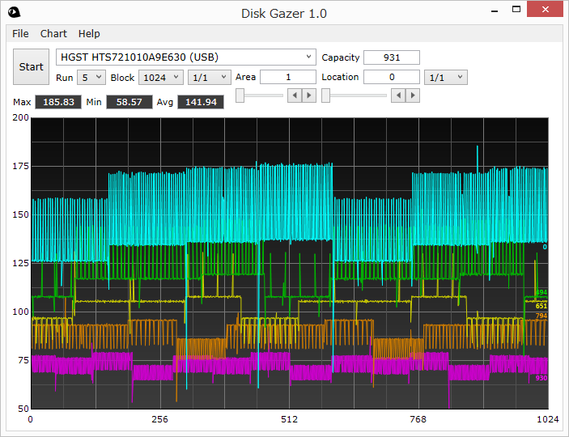
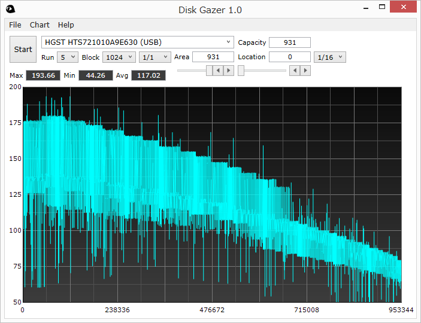
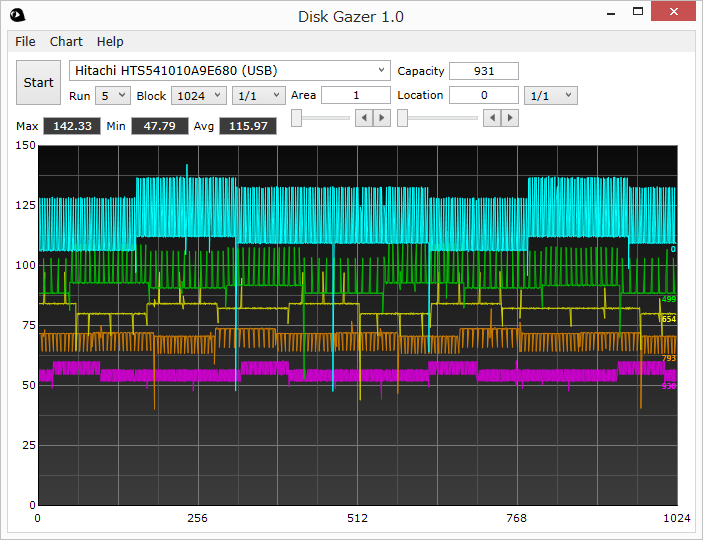
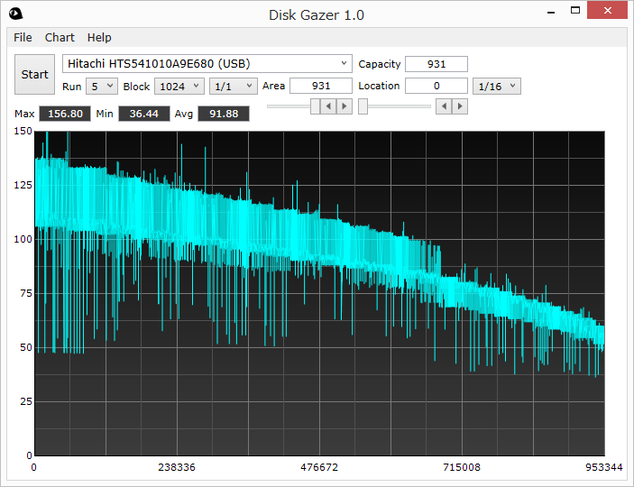

Do you know waves in a hard disk drive?
These colorful line charts illustrate the transfer rates at 5 different locations in a 1TB hard disk drive. Higher line is nearer to the start of the disk and lower is nearer to the end.
You can see repetitive waves that gradually change their forms and lengths. To be clear, I call continuous plateaus of various heights "wave" not spikes upward or downward.
The below is the full chart.
Perhaps you have seen charts like this before. It is well known that the transfer rate gradually goes down towards the end to disk because it depends on the linear rotational speed of disk. If you had a chance to zoom in a specific location, you would have seen waves there.
Here is the charts of another hard disk drive.
 You can see waves of different forms. Then, some questions might come to your mind.
Are they just meaningless noises?
- No, not at all. They are real and perfectly reproducible. If you use a measuring tool which has enough fineness, you will be able to see them.
Dose it happen to these drives only?
- No, not at all. As far as I know, all modern hard disk drives have their own wave forms. To be accurate, every unit of every model of hard disk drive has its own unique wave forms.
So what are these waves?
- I have no clear answer. However, I have a hypothesis that each plateau represents a group of tracks in a zone on a recording surface of a platter in a hard disk drive. There is no other reasonable explanation about them. If I try to describe how I have reached this idea, it would be a little bit long story.
If you are interested in, check what waves your drive has with - Disk Gazer.